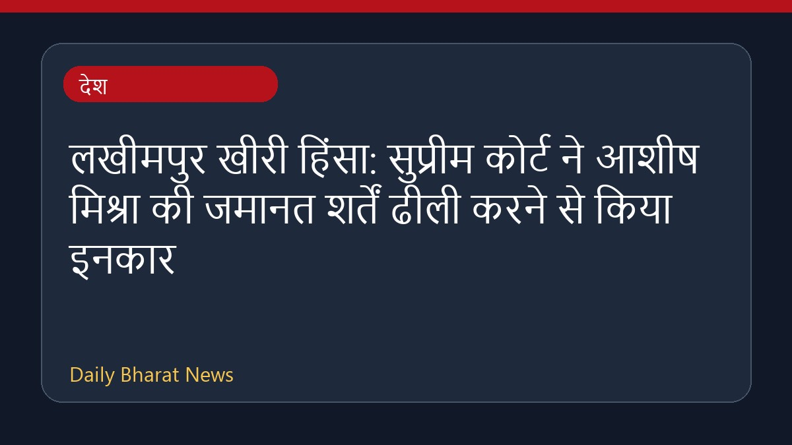

लखीमपुर खीरी हिंसा: सुप्रीम कोर्ट ने आशीष मिश्रा की जमानत शर्तें ढीली करने से किया इनकार

सुप्रीम कोर्ट ने लखीमपुर खीरी हिंसा मामले में आरोपी आशीष मिश्रा की जमानत की शर्तों में ढيل देने से साफ इनकार कर दिया है। आशीष मिश्रा केंद्रीय मंत्री के बेटे और इस मामले में मुख्य आरोपी हैं। अदालत के इस फैसले से उन्हें कोई राहत नहीं मिली है। इस संबंध में विभिन्न मीडिया रिपोर्टों में जानकारी दी गई है कि न्यायालय ने जमानत की शर्तों को बदलने की मांग को खारिज कर दिया है। इस मामले से जुड़ी अन्य विस्तृत जानकारियाँ अभी सीमित हैं।
मूल स्रोत: India News Sources
Lakhimpur Kheri violence: Supreme Court refuses to relax Ashish Mishra's bail terms - barandbench.com ↗
Lakhimpur Kheri violence: Supreme Court refuses to relax Ashish Mishra's bail terms - barandbench.com ↗